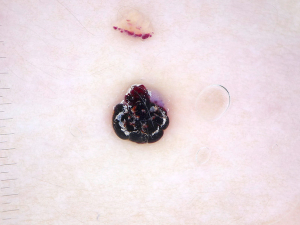
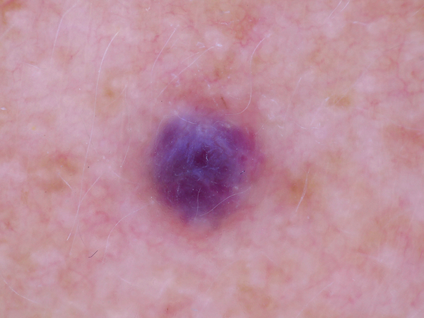
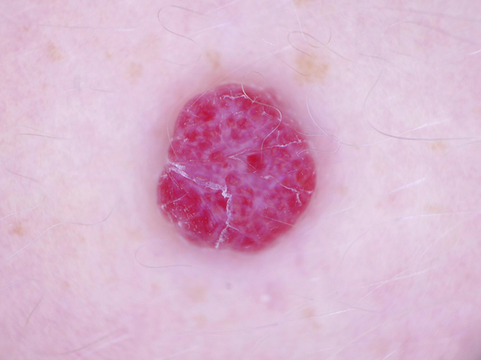
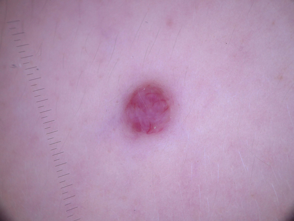

-
What is this lesion?
Vascular skin lesions include cherry angiomas, angiokeratomas and pyogenic granulomas. The exat cause of angiomas is unknown.
-
What does it look like?
Angiomas are dermatoscopically characterized by red or purple color and solid, well circumscribed structures known as red clods or lacunes.
-
Should I see a doctor?
DEPENDS. These lesions are common noncancerous lesions in adults. If you have any concerns or other symptoms (e.g. bleeding, pain) please consult a doctor.
-
What the doctor would do about it?
Angiomas can usually be diagnosed by just their typical appearance. Angiomas usually do not require treatment but can be removed for cosmetic reasons or if in an area that is easily bumped and can lead to bleeding.



